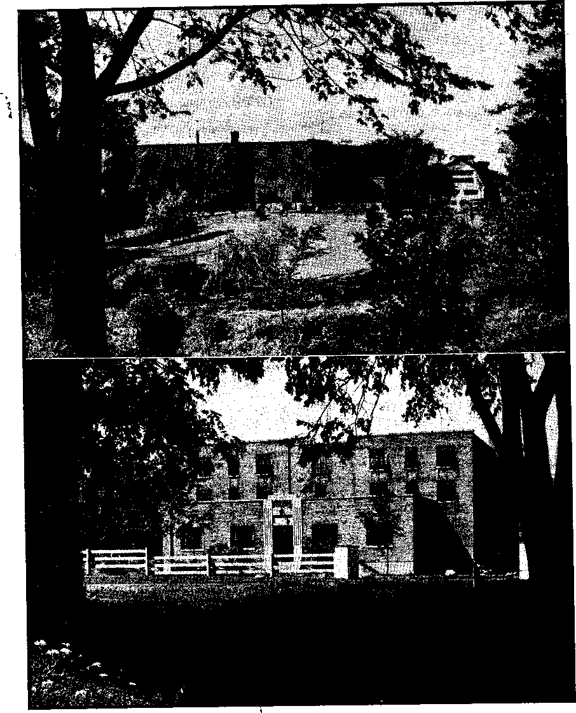

Contents
Why the Hierarchy Fights Free Worship in "Latin America
Latin America a Missionary Field?
“Good Neighbor” Policy Jeopardized?
Grasping for Another Continent
Clerical Agitators of Ill Will
Hierarchy’s Real Reasons for Fighting
“Thy Word Is Truth”
Gilead’s First Postwar Class Registers
Selecting, Growing, and Selling Plants
Bloody Mary Ascends the Throne
Published every other Wednesday by WATCHTOWER BIBLE AND TRACT SOCIETY, INC, 117 Adams St., Brooklyn 1, N. Y., U.S.A.
OFFICERS
President * N. H. Knorr
Secretary W. E. Van Amburgh
Editor Clayton J. Woodworth
Five Cents a Copy
11 a year in the United States
11.25 to Canada and all other countries
NOTICE TO SUBSCRIBERS
Remittances: For your own safety, remit by postal or express money order. When coin or currency is lost in the ordinary mails, there is no redress. Remittances from countries other than those named below may be made to, the Brooklyn office, but only by International postal money order. .
Receipt of a new or renewal subscription will be acknowledged only when requested. Notice of Expiration is sent with the journal one month before subscription expires. Please renew promptly to avoid loss of copies. Send change of address direct to us rather than to the post office.- Your request should reach us at least two weeks before the date of issue wfth which it Is to take effect. Send your old as well as the new address. Copies will not be forwarded by the post office to your new address unless extra postage is provided by you.
Published also in Greek, Portuguese, Spanish, and Ukrainian.
OFFICES FOR OTHER COUNTRIES
Argentina Calle Honduras 5646-48. Buenos Aires Australia 2 Homehush Rd., Strathfield, N. S. W. Brazil Rua Licinio Cardoso 230, Rio de Janeiro Canada 40 Irwin Ave., Toronto 5, Ontario, Canada England 34 Craven Terrace, London, W. 2
Mexico Calzada Melchor Ocampo 71, Mexico, D..F. South Africa 623 Boston House, Cape Town
Sintered as second-class matter at Brooklyn, N. Y., under the Act of March 3. 1879.
In Brief .
Another Tragic Case >'
♦ One more sad tale. Philip Suetter, gold-mining operator, Yfeka, Calif,, sold a 49-percent interest in five minirig properties to the “Most Reverend” Francis J. Beckman, Roman Catholic archbishop of Dubuque, Iowa, for 200 $1,000 notes on the archdiocese. The archbishop at length thought he smelled a rat and wanted to back out. He offered $20,000 to get his notes back, Suetter to take back the stock, and he actually paid half of that sum. When Suetter demanded the other $10,000, and threatened suit, the clergy straightway made it hot for him. Among the number were the “Most Reverend” Paul.P. Rhode, Catholic bishop of Green Bay, Wis. (interested to the extent of $30,000), and the “Reverend Father” Stephen A. Bubacz, Chicago Catholic priest. Suetter was arrested, charged with using the mails fraudulently. The next time he takes any Roman Catholic bishops into any-of his business enterprises he will be a lot older than he is now at 58. '
■ i
“Destroyed for Lack of Knowledge”
♦ I enjoy reading Consolation and only wish millions of people of the world could be able to throw off the ignorance in which they are living. It is pitiful and tragic that much of ^he world’s misery and trouble is caused by its ignoraiice and paganism. We see much of it here in the Latin countries. Why should the people be tolerant of what they know is wrong? Why did we not.hear anything about Hitler or Mussolini as being excommunicated, when others have been excommunicated for offenses not nearly so great? And why should a Protestant country like the United States be called upon to rule over the Catholic section of Germany, when Rome has millions stored away that was taken from the people and rightfully belongs to them and not to the Hierarchy ? —Contributed, Canal Zone.
“And in His name shall the nations hope.”—Matthew 12:21, A.5.V.
Volume XXVll Brooklyn, N.Y,, Wednesday, October 10, 1945 - Number 680
< * r ET us not love in word, neither in tongue; but in deed.” (1 John 3:18) Up-service to a principle is cheap; actions speak more loudly. Words without backing carry the stamp of hypocrisy and brand their authors as hypocrites. Of such there is no shortage, whether in fields political or religious. For the past several years much harping has been done on the theme of freedom. Four particular freedoms, the second being freedom of worship, have been specially whooped up, and now that global war has been climactieally ended by the atomic bomb, war-weary peoples look hopefully for an era of peace and freedom. The statements and promises of their world leaders lead them to expect it. But even before the dawn of man’s new world of freedom, while it was still laboring and travailing in the birth pains of global war, disruptive forces were at work. In one breath religious freedom was eulogized and championed, and in the next it was struck a stunning blow. The attack came from a veteran fighter against freedom, and the world’s foremost saboteur of peace and unity, the cunning Roman Catholic Hierarchy. In word they love, sometimes; in application and deed they hate, always.
Here is the statement, issued by the American bishops and archbishops on ‘Victory and Peace’, in November of 1942: '
Some nations are united in waging war to bring about a slave world, a world that would deprive man of his divinely conferred dignity, reject human freedom, and permit no religious liberty. The full benefits of our free institutions and the rights of our minorities must be openly acknowledged and honestly respected.
We send our cordial greetings to our brother bishops of Latin America. We have been consoled by recent events, which give a sincere promise of a better understanding by our country of the peoples of Mexico, Central and South America.
Citizens of these countries are bound to US by the closest bonds of religion. They are not merely our neighbors; they are our brothers professing the same faith. Every effort made to rob them of their Catholic religion or to ridicule it or to offer them a substitute for it is deeply resented by the peoples of these countries and by American Catholics. These efforts prove to be a disturbing factor in our international relations. The traditions, the spirit, the background, the culture of these countries are Catholic. We express the hope that the mistakes of the past which were offensive to the dignity of our southern brothers, their culture and their religion, will not continue.
This is merely the shattering thunderclap climaxing a series of ominous Hierarchy rumblings against Protestant activity in Latin America. The explosive power of this religious blow is eloquently testified to by the fact that momentarily it almost “resurrected Protestantism from the dead”. Inter-faith eulogies and back-slapping sessions of mutual admiration were forgotten in the defensive roar that arose from Protestant circles. Many editorials appeared in their journals and papers condemning the Hierarchy’s bid for a religious monopoly in Latin America. Indignant Protestants were joined in the protest by many others, not for religious reasons, but m the interest of freedom. More than a few of these additional protesters were themselves Catholies, showing that the vicious thrust at freedom of worship was pbwered by the Catholic clergy, not the Catholic laity. But despite oppositio'n the hierarchs have pushed doggedly on in their drive to outlaw the second of the “four freedoms” and to isolate Latin America from any freedom ideologies df man's proposed postwar world. Just how good a case do they present for this new form of isolationism?
The Roman Catholic Hierarchy claims that Latin America -is practically 100 percent Catholic. With this pure assertion as a rather shaky foundation, she advances another highly debatable step in proclaiming that this makes Latin America a solidly Christian stronghold. Hence, she argues, these nations do not constitute a field for missionary activity ; any change in their religious status could only be in the direction of de-christianization, says she. Any who teach doctrine other than that peddled by the Hierarchy are accused of alienating the loyalty of the masses from their government and paving the way for what clericals brand “Yankee imperialism”. Having thus projected the issue from the realm of religion into the national political fi^ld, she blows it up to international proportions by saying that activities in preaching the Bible “prove to be a disturbing factor in our international relations”.
It is on this excitable note that the Hierarchy agitators continually harp. The preaching of anything but Catholicism, in Latin America jeopardizes the “good neighbor” policy, is the lever against which the clericals throw their full weight and exert pressure upon the political powers. Typical is the Catholic editorial statement, “If the government of the United States wants to retain the good will and friendship of the Latin American countries, these pernicious Protestant ‘missionary’ activities must cease.” The Roman Catholic Hierarchy has made this issue one for public debate. Let us therefore weigh her claims in the balances and see whether they are found wanting.
Is the Hierarchy claim that Latin America is practically 100 percent Catholic true? In Latin-American countries very large proportions of the student personnel and of the educated classes, including the new middle class, do not profess to be Catholics. There those people are traditionally indifferent and even hostile to the Catholic religion. To them to be religious and go to the Catholic church is the sign of inferiority. In fact, in some Latin-American centers influence of the Catholic Hierarchy was so radically opposed that all forms of academic garb in the schools have been barred. Says Hubert Herring, in Good Neighbors (Yale University Press, 1941), “The leaders in the business and professional and intellectual life of Argentina no longer accept the claims of the church with any seriousness.”
But what about the masses of the people in general? In Chile, according to a pastoral letter of the Roman Catholic Episcopate there (November, 1939), “barely 10 percent of the population of Chile attends mass on Sundays and feast days.” Chile has only one priest to approximately every 3,000 of the population. Peru and Mexico have one priest to approximately every 6,000; Argentina and Brazil, one priest to approximately every 9,000; Guatemala, one priest to approximately every 25,000. In the United States there' is one Catholic priest to every 600 Catholics, or one to every 3,600 of the country’s total population,regard-less of religious affiliation. In England there is one priest for every 400 Catholics, or one for approximately every 7,000 of the total population. These figures are supplied by the Roman Catholic Primer Congreso National de Vaca-ciones Eclesiasticas, of Guatemala, and argue that, judged by the proportion of Roman Catholic priests to the total populations of Latin-American countries, the United States is much more a “Catholic country” than any below the Rio Grande.
A census taken in 1944 shows that more than 20 percent of the inhabitants of Brazil are Spiritualists. Moreover, in Peru a recent census, shows a large proportion of the population declared themselves “evangelical” in identifying their non-Catholic religious status. In Latin America there are millions of Protestants; there are millions of Protestant sympathizers; and there are magy more millions who profess no religious affiliation. About half of the Latin Americans really profess to be Catholic. By tradition and culture these countries may be Roman Catholic; but not by number. The Hierarchy's claim of an overwhelming Catholic majority is not true.
Is the Hierarchy, claim that Latin America is not a missionary field true? Puncturing the first claim regarding Catholic preponderance largely debunks this second one, but a little further examination clinches the matter. Morally, Latin America is far from Christian. In certain South American countries as much as 75 percent of the populations are of illegitimate birth. Rather than retard the degradation, the priests forward it. In this connection note what The Christian Century of September 2, 1942, said: '
The legend that South America is a Catholic continent still persists. But it is hard for supporters to make a clear case. It was not so many decades ago that a recommendation went to the Vatican that South America be declared a mission field, moral and spiritual conditions were that bad. But, of course, it was impossible to do that and not lose face. All churches ahd convents, however, in Ecuador 'were closed, and a group of German priests were put in charge to reorganize and reopen the work of the church. Last year the theological seminary in one of the most Roman Catholic of South American countries .was closed because of moral conditions and a group of Mexican priests were brought down to reorganize that institution.
These conditions exist after 400 years of the supposedly uplifting and Christianizing influence of Catholicism. In despair because of the deplorable moral and spiritual conditions in that “Christianized” a la Hierarchy continent, South American Catholics themselves petitioned the Vatican to declare the whole continent a missionary field. Tins proves that it is such, in fact. Furthermore, by its action the Hierarchy recognizes it as a missionary field. On this point The Converted Catholic of December, 1944, said:
Reliable statistics utterly confound the claim that Latin-Am eri can countries are almost entirely Catholic in population. Not only do Catholies in the United States proportionately outnumber those in Latin-American countries, but the proportion of priests to the population is much larger in the United States than in any country of Latin America. Catholic church authorities know this better than anyone else. They know' that Latin-American countries are very much a missionary field, with very few practicing Christians, and in immediate need of evangelization. Their fear is that Protestant missionaries, if allowed a free hand, will make it forever impossible to bring Latin America under the political control of the Roman Catholic Church.
Proof of all this may be seen in the feverish efforts now being made by the Catholic Church to send large numbers of missionary priests to Central and South American countries. While it is extremely difficult and often impossible to secure entrance for Protestant missionaries to those countries, a constant flow of Catholic priests from the United States to Latin America is being steadily maintained. Their departure is recorded not only in the Catholic press but even in our secular newspapers. Last July 31, the New' York Times reported the departure of “twenty-seven Catholic priests for mission posts in South and Central America this afternoon1’, after ceremonies in the cloister of Maryknoll Seminary at White Plains, N. Y. .
t ■ '
“bog in the Manger’1 Tactics
In her effort to hold on to the religious monopoly she has abused in South America for the! better part of 400 years, the gluttonous Hierarchy has bitten off a continental mouthful that is more than she can chew. She admits that she cannot serve the field herself, sends missionary priests to that land, and cries for more. Late in 1942 one hundred Catholic missionaries were sent there from Maryknoll. Only a few months ago Archbishop Spellman made an impassioned plea to 2,000 students assembled in St. Patrick’s Cathedral that they choose careers as missionaries. The Hierarchy admits her inability to adequately fill Latin America’s spiritual needs; yet this religious “dog in the manger” snarls and growls and backbites to keep others away from what she cannot handle. She draws priests from this country, where she is a minority, and shoots them off to a continent where she boasts an overwhelming majority. Strange procedure, that I Evidently “Catholic” Latin America needs Catholicizing more than Protestant United States. With tongue she says Latin America is not a missionary field; by deeds she declares that it is one. Tier claim that Latin America is not a missionary field is' false.
Is the Hierarchy claim that Protestant activities in Latin America jeopardize the'Good-Neighbor policy' true? It is apparent to liberals in South America, many of whom are nominal Catholics, that freedom and democracy can be advanced by a strong Protestant movement in their countries. After a long struggle the Latin-American republics have succeeded in getting constitutions patterned after that of the United Stated, and which guarantee religious liberty and stipulate a separation of church and state. The Catholic Church has stood for authoritarianism, totalitarianism and Fascism in South America; also the maintenance of privilege of the wealthy classes. Exercise strengthens; and freedom of worship and other freedoms written into Latin-American constitutions can become strong and virile only through use. Freedom-loving Latin Americans appreciate this fact, and welcome those visitors to their shores who anticipate exercising these liberties. Rather than resenting Protestant activities, they' view with disgust and indignation the attempt of the Hierarchy' to slap a spiritual quarantine over tiieir countries.
Spurred by the raising of this issue by the Catholic hierarchy of the United States, George P. Howard, citizen, of Argentina and distinguished Protestant missionary, toured Latin America to propound to jurists, statesmen, diplomats, journalists and educators, almost all of whom are Catholics, the question, “Are Protestant missions an obstacle to the Good Neighbor policy?” The responses were unanimous, and are set forth in detail in Howard’s hook, Religious Liberty in Latin America? (Published in 1944 by Westminster Press, Philadelphia) A few of the many are here quoted:
I have no hesitation at al] in declaring that as a result of continuous and attentive observation of the work Protestantism realizes in my country, I give it my unstinted applause and recognize that it has always contributed to the progress of our country and the moral improvement of our people. [Ex-President Alessandri of Chile]
You ask Trie to express my opinion regarding the campaign carried on in the United States against the presence of Protestant missionaries in our country. I understand that it is claimed that they are an obstacle to the Good Neighbor policy. I am not acquainted with the arguments on which such an opinion is based; but I think that it is extremely strange that anyone should hold such an idea .in his mind. [Ex-President Jaun Esteban
Montero of Chile]
It is my agreeable duty to say to you that, as far as Chile is concerned, there is no basis or foundation for such an unjust accusation. Protestant methods of work have in them nothing which constitutes an offense to our national sentiment or the culture of our people. [Ex-President Carlos Ibanez of Chile]
The undersigned, being consulted regarding their estimate of the Protestant missionaries who have come from the United States and who work in Chile, on the basis of their observation as ministers of state, declare: That the total contribution of these missionaries to our country has been highly beneficial in a cultural, civic, and spiritual sense. . . . That, far from creating difficulties in international relations or being an obstacle to the Good Neighbor policy, they have promoted a feeling of mutual understanding and a spirit of practical co-operation without in any way interfering in political matters. [Statement signed by the incumbent Chilean president’s entire cabinet]
The presence of Protestant missionaries is not and cannot possibly be an offense to the people of Argentina in whose history, institutions and daily life freedom of conscience and of religious practice has always been held as something very precious. [Antonio Sagarna, member of Argentina Supreme Court]
I am amazed at the question of whether the work of the Evangelical church in Latin America is an obstacle to the Good Neighbor policy. . . . The work accomplished by English and American missionaries has caused no disturbance nor stirred up any incidents. [Amerieo Ghioldi, Argentine congressman]
Not at all; you should go where you are needed and not only where you are wanted. Jesus was not wanted in many places; they stoned Him at times; but He went on with His mission. There is a great field for Protestant work in this country. There are many Roman Catholics who are deeply dissatisfied with the spiritual condition of the Church.
[Enrique Jorge, Argentine lawyer and author]
The suggestion that South America should become a closed continent to every faith except Roman Catholicism is absurd. First of all it would be proof of an intolerance that is incompatible with the degree of civilization which we have achieved. [Francisco Filho, ex-president of the Brazilian Educational Association and professor of the University of Brazil]
Not at all. Those missionaries can only help that policy, as they are, in fact, doing. They preach the gospel, whose predominant note is that of the brotherhood of all men. It is absurd to think that they do not collaborate in a policy which has as its objective a fraternal relation between the peoples of America. [Helio Lobo, member of Brazilian Academy of Letters and of the Historical and Geographical Institute of Brazil, and former consul general in London and New York]
Missionaries are in no way an obstacle to the Good Neighbor policy. They are making a most valuable contribution to the moral and cultural development of our country. They help us understand the United States better and they interpret certain aspects of the life of that country to us. [Manuel F err az, president of the Court of Appeals of the State of Sao Paulo, Brazil] i
I do not consider that the coming of Prot-estgnt missionaries prejudices the work of Pan-Americanism and the Good Neighbor policy. Our Catholic clergy is not nationalized and any discrimination in the treatment of churches is odious in countries where the state is secular and separated from the church. . . . I have never known of any American missionary who was arrested as a spy. What I do know from trustworthy reports is that their educational work is highly esteemed in our country. [Roman Catholic bishop of Maura, Don Carlos Duarte da Costa, resident of Rio de Janeiro] .
In no way do evangelical missions constitute an obstacle to the Good Neighbor policy. A Catholic mission would hardly be able to do the truly democratic and spiritual work which is done by the Protestant pastors and missionaries. . . . National unity will not be destrayed by the entrance of creeds and philosophies different from those of the Catholic Church. One must not confuse unity with uniformity. [Hugo Artueio, member of the Uruguayan Legislature]
They are not. Furthermore, we are very .proud of the fact that our constitution stands (or religious freedom, and we are resentful df any effort to annul this liberal attitude. | Jose Varela, president of the National University of Montevideo ]
I have never heard of any difficulties being created for good inter-American relations by the presence of missionaries in our country. ... I caimot iriaginc why the presence of Protestant missionaries in Colombia should in any way mar relations between the twro countries. [Julio Carrizosa Valenzuela, president of the National University of Colombia]
Tt does not seem to me that the governments of these republics should yield to the pressure being brought to bear by the Catholic hierarchies for the purpose of obtaining a virtual monopoly in control over the souls of men. This converting of Latin America into a religibus “closed shop” would only revive in the age of bombing planes the old fanaticism of the Inquisitors, the Calvinists and the Puritans. [Enrique White, head of the Bogota (Colombia) public library]
Many more statements of'prominent Latin-American leaders in government and thought could be presented, as indeed Mr. Howard does in his masterly book Religious Liberty in Latin America? But since the Hierarchy's accusation is unaccompanied by evidence, since it is sounded only by prejudiced Roman clericals and a few toadying “fifth column” Protestants, and since its obvious design is not to reveal a truth hut is to rouse rabble and exert pressure on politicos, further refutation of it is not necessary. The Hierarchy claim that Protestant activities in Latin America jeopardize the Good Neighbor policy is false.
Shifting from the defensive to Jhc offensive, let us see just how impregnable the Hierarchy’s position is. Arc her skirts clean of the charges she so recklessly hurls at bthers ? Does she practice the principles she preaches for others? Or can her principles expounded to others be turned against her and thus convict her of hypocrisy1? Does the shot she fires at others zoom back to find the biggest target in her own vitals?
The American hierarchy’s statement on ‘Victory and Peace’ condemned nations that “permit no religious liberty”, and added: “The full benefits of our free institutions and the rights of our minorities must be openly acknowledged and honestly respected.” But that applies only where the Catholic Church is the minority; where she is in the majority religious liberty of minorities is neither acknowledged nor respected. Latin America proves this. “The traditions, the spirit, the background, the culture of these [Latin-American] countries arc Catholic,” whimpers the hierarchy, and for this reason says Protestant missionaries should stay out. By reasoning every bit as strong the Catholic Church should stay out of the.United States, because “the traditions, the spirit, the background, the culture” of this country are Protestant. But she doesn’t; and'freedom-loving Protestants and other Americans do not inconsistently ask that she stay out. In this country she gains converts ■ from among Protestants, and boasts about it. If, in the exercise of such freedoms as speech and press and worship, she can proselytize Protestants, well and good. It is her constitutional right. But Latin-American constitutions guarantee religious freedom, also. The procedure should work both ways. However, this quotation from the Baltimore Evening Sun, January 29, 1945, shows the Hierarchy does not think so:
A pastoral letter protesting against activities of Protestant sects in Latin America has been issued to the Catholic clergy and the members of all dioceses in Argentina by the cardinal primate, archbishops and bishops. . . . The letter asserted the Protestant organizations were waging an intensive campaign in Latin America to gain converts, “The audacity of the attack is such that it is well known that Protestant missionaries and pastors invoke our constitution and claim most absolute religious liberty,” the letter said. The letter declared that the constitution grants religious freedom, but this does not mean freedom to proselytize Catholics. ■
The Hierarchy thinks it right for her to invoke constitutional liberties to proselytize in Protestant countries; but what an audacious attack it is if Protestants exercise such liberties in a Catholic country ! This queer concept of reljgious freedom is most unfair and most Vatican-like and most Jesuitical. No liberal and honest Catholic agrees with it.
The United States is just about as much Protestant as Latin America is Catholic. lienee Latin America is as much of a missionary field for Protestants as the United States is for Catholics. But typical of the Hierarchy’s position in this matter is that taken in the pastoral letter of Peruvian^ archbishops and bishops, which states (December 18, 1943):
If our peoples were thus steeped in the oldest and most glorious of Christian cultures, what can be the aim of these stubborn Protestants in introducing their propaganda amongst the peaceful dwellers of these lands, who were born and cradled in the Catholic faith? Do they pretend to Christianize them as if they were heathen in some corner of Africa or of the South Seas? How is it that they prefer our territory for the scene of their evangelical aggression and forget the 75,000,000 of atheists which figure in the latest census in the United States? Can they be unaware of the fact that the gospel has been for centuries the very blood of our culture, the soul of our civilization and the heart of our great heroes? Dor its work of destruction and proselytism Heresy chooses, instead of pagan peoples, Catholic centers, which profess and practice the true faith, and thus in-sults our Christian traditions, our saints and our religious rites.
Thc^e arc not 75,000,000 professed atheists in the United States, but there arc about that many who are not churchgoers. The majority of them are nominal Protestants. They are as loyally Protestant as the majority of Latin-American Catholics are Catholic. But let this pass. For the sake erf discussion, let us accept this Hierarchy statement and see how strong are the conclusions she draws from it. View the matter from three angles:
First, in Catholic countries the Hierarchy counts as Catholic everyone who does not definitely profess some other religious belief, whether he claims to be Catholic or not. On this basis, the United States being a Protestant country, Protestants would be excused in calling these 75,000,000 “atheists” Protestants, since they profess no other religious affiliation. Hence it is not necessary for Protestant missionaries to stay home to convert them.
A second view: If there are 75,000,000 atheists in this land, why should Catholic missionaries trained in the United States desert these 75,000,000 “lost souls” and traipse off to Latin-American countries which the Hierarchy claims are already Christianized, are already practically 100 percent Catholic, where the “peaceful dwellers of these lands” were “born and cradled in the Catholic faith”? A strange waste of Catholic missionary man-power, is it not?
Third, ask yourself: Were all the Jews in Palestine converted to Christianity when Christ Jesus commanded His ministers to 'go and make disciples of all the nations’? Did the Lord’s holy spirit wait till all Jew’s had embraced Christianity before directing that the gospel should be taken to the Gentile nations'? (Matthew 28:19, 20; Acts 10:17-35) The answer is No, and by extension of that principle it follows that the 75,000,000 unconverted do not necessarily tie down Protestant missionary activity to the home front. The Hierarchy’s argument is unscriptural.
The more one meditates on the fabric of argument the Hierarchy has woven, the more sieve-like it becomes. It does not begin to hold even a drop of water of truth. For instance, the Peruvian hierarchy scornfully says that “stubborn ^Protestants . . . pretend to Christianize them as if they were heathen in some corner of Africa”. Africa stirs memories. Early in 1944 a Catholic paper in the United States reported that “the Holy See requests the prayers of the faithful during the month of March for ‘The Preservation of Africa from Sectarianism5 That means preservation from Protestantism. The Hierarchy says Protestants should stay out of Latin America because it is'not a missionary field; then, on the other hand, she says they should stay out of the recognized missionary field of Africa. Where on earth does she think Protestants should go? Evidently to hell, or the grave, the condition of death; for the Hierarchy still clings to its. policy of “death for heretics”, to which category she relegates al} Protestants. Not content with posting Latin America with “No Trespassing” signs, she branches out in her wholesale religious censorship campaign by plastering the continent of Africa with “Private Property” notices. She restricts freedom of worship to herself; anyope who worships differently on this earthly ball is poaching on her domains. She is the number one enemy of freedom.
There is a pensive and dreamy note in the Holy See’s wish concerning Africa. The pope thinks of glorious bygone days of crusading and his beloved crusader, the deceased Catholic dictator, Mussolini. He pines for this one referred to by a previous pope as “the man sent by providence devoid of liberal prejudices”. After Mussolini seized Ethiopia all Protestant missionaries were expelled. With the ousting of the Italian invaders they were invited to return. The pope doubtless dreams and yearns for an Africa converted as once was Ethiopia. And how was that? Information taken from the Pittsburgh (Pa.) Courier tells us:
Consider the Catholic church in Italy. The other day Cardinal Schuster Of Milan, one of its great princes, wished “peace and protection” for the armies of Italy which are murdering Ethiopians with air bombs and poison, and blessed them for “opening the doors of Ethiopia to the Catholic faith and the civilization of .Rome”, adding: “We must cooperate with God in this national and Catholic mission, above all at this moment when on the fields of Ethiopia the standards of Italy carry to triumph the cross of Christ to break the chains of slavery and open the paths for the missionaries’ gospel.”
At least Protestants do not use such bloody methods of conversion. Also, the “missionaries’ gospel” for which the way WTas thus opened excluded the gospel of Protestant missionaries, since these workers were chased out. Another papal inconsistency here presents itself, also. The Hierarchy says Protestant workers should stay out of Latin America because it is already Christianized. By like reasoning Catholic missionaries should stay out of countries that professedly embrace Christianity of a form not Catholic. Ethiopia had accepted Christianity, and was far advanced in it. But at the point of a sword the Hierarchy ‘robbed them of their Christian faith and ridiculed it and offered them a substitute for it, which efforts were resented by the Ethiopian people and professed Christians world-wide, and proved to be quite a disturbing factor in international relations’, to borrow some of the flowery phrases of the American hierarchy’s Victory and Peace’ statement.
“Good Neighbor” Policy
Charge Boomerangs
It is .actually the efforts of Catholic clericals that “prove to be a disturbing factor in our international relations”, that endanger the Good Neighbor policy. The facts prove it. About the time of the American hierarchy’s protest regarding
Protestant missionary activity in Latin America, charges were circulated freely that the United States State Department . was favoring Catholic missionaries over
Protestant missionaries in the granting of passports for Latin-American points. The State Department denied the charge, and presented facts and figures in support of its denial. At present there seems to he no discrimination shown by the State Department, despite heavy Catholic pressure. But note the reaction of some prominent Latin Americans at just the thought or possibility of discrimination against Protestants, and determine whether the presence of Protestant missionaries in those countries disturbs international relations, or whether it is the Catholic clericals’ attempt to debar them that endangers the Good Neighbor policy (these statements were made to George P. Howard, and published in his previously mentioned book, Religious Liberty in Latin America?) :
We are witnessing a “directed religious policy” which requires that the abundant flow of American functionaries to South America should fulfill, if possible, the prerequisite of being Roman Catholic. We Latin Americans are inclined to be distrustful. We ask ourselves : Why does a country which is predominantly Protestant send us delegations that are predominantly Catholic? Why does it try to hide its Protestantism? [Manuel Seoane, Roman Catholic lawyer and author, editor of Chile’s popular weekly Ercilla]
The influence of Catholic intolerance reflected in the foreign policy of the United States is considered by people of liberal spirit in this country as a dangerous symptom of the totalitarian leanings of the > United States. Therefore, there is a feeling of resentment among liberal sections of Uruguayan public opinion because of this surprising aspect of American policy. ... I have lived for two years in the United States and I hold a deep affection for its people. The foundation of democracy in that country is the small community of Puritan tradition. Evidently there, is a clerical revolution under way in the world to destroy the gains which up to the present have been made for democracy. This is especially dangerous in the United States. [Hugo Artucio, member of Uruguayan Legislature, university professor, member of “The Free World Association”, and author of The Nazi Underground in South America]
For many South Americans the attitude of the United States in strengthening political power of the Catholic Church in South America, especially in those countries in which that Church adheres to the autocratic forms of government, is viewed with alarm. The final result is the strengthening of dictatorship on our continent. . . , North American public opinion must understand that the Good Neighbor policy means concretely that the Atlantic Charter must also hold good for these parts of the world where there is much official talk of democracy and liberty but where people still live in subjugation. [Americo Ghioldi, Argentine congressman and editor of the influential Buenos Aires daily La Vanguardia]
The following extracts from an article appearing in the February 26, 1945, issue of The New Republic, by Samuel Guy Inman, shed further light on Catholic political machinations:
The United States government . . . seemed to think that the way to beat Hitler propaganda in Latin America was to channel our progress through the Roman Catholic Church. . . . According to reliable inside sources, the idea of using such channels seems to have originated about 1940. . . . The advice given to the State Department did not come from South American Catholics, but from an insistent group in the United States. They declared, as Father Joseph Francis Thoming put it in the Catholic Digest, that “The American republics will have no faith in an alliance without the benefit of clergy”. . . . This channeling of cultural exchanges through the Church was opposed by Latin Americans employed by the administration to advise on this subject. They declared that it would turn the democratic forces in Latin America against us. ... A prominent Havana review, Ultra, translated the Catholic Digest article and attacked the “effort to make Washington believe that all North American cultural contacts will be badly received if not made 'through the Catholic clergy”. The editor declared that such ideas “are completely false”-—offensive to Latin Americans—and that “much of the future depends on whether Washington understands this truth”.
*■1 A Latin American who has been an intimate ^adviser to our government and a great devotee of the Good Neighbor policy, has just returned from a trip through Latin America, He reports that in all his previous experience he has never known such distrust of the United States. Tie believes that it results from the fact that our representatives have innocently believed that they could win Latin Americans by showing them that this country is, like themselves, Catholic, that our government will protect them from any Protestant propaganda, that we favor the reactionary dictators and ecclesiastics who control many of these republics and that we back Franco and the propagandists of Hispanidad. . . .
“I noticed something curious when I went tn the United States,” said the president of the University of Sao Paulo, a guest of the State Department on a visit to this country. “Everyone who had any official contact with me was an American Catholic.” A similar impression was reported by Dr. Gil Salguiro of Uruguay, another guest of the Department. Although he is not a Catholic and eame from a country where anti-clericalism is particularly strong, during his visit here Dr. Salguiro was sent to lecture exclusively in Roman Catholic institutions. ...
The accomplishments of the Good Neighbor policy have given me [the author of the article] one of the deepest satisfactions of my life. But that accomplishment is now headed for trouble. This time the cause is not military intervention. It is clerical intervention. It threatens not only the Good Neighbor policy but freedom of expression in every section of the globe.
The Hierarchy endangers the Good Neighbor policy by injecting a religious issue into polities. They are: .not con-
12
cerned about Good Neighborism. They have not only a religious axe to grind, but a political one as well, and grind it they will, regardless of whether 'international relations are disturbed thereby or not. They have inflamed credulous people with rabble-rousing speeches and incited violence and murder against Protestants in Latin America, and, with diabolical cunning fostered along with their anti-Protestantism campaign, an anti-Americanism feeling. Then when the fires of hatred they have lighted and fanned become a raging inferno of violence and murder, with mock alarm and indignation they cry out, “Look what Protestantism has done 1” The following news dispatch from Mexico city (published in the Providence (R. I.) journal, November 26,1944) sho’ws the Hierarchy tactics in Latin America:
A call was issued here the other day by Catholic Archbishop Luis Martinez for a “crusade, as in the Middle Ages” against “Protestant penetration”. The prelate’s appeal spotlights a situation packed with dynamite and having explosive possibilities not only for Mexico internally but for Mexican-Am eri can relations. For, while it underscores the steadily worsening relations between Mexico’s minority Protestantism and majority Catholicism, one of its most disturbing by-products is anti-Americanism.
In the past six weeks, eight cases of attacks on Protestants by Catholic fanatics have been reported in scattered parts of the country. In each attack, according to information available here, anti-Protestantism was linked to anti-Americanism by the assailants. . . .It has also been substantiated that in several cases Catholic priests and other community leaders have not only incited the attackers, but have actually led them in their assaults. . . .
* More recently taken up by general magazines and by Catholics of every degree, ranging from Archbishop Martinez to rabid clerieo-Faseists, this written and oral propaganda program has exploited the latent anti-Americanism of many Mexicans and has become a matter pf grave concern to the Mexican
consolation government and the U. S. state department. . . . The primary purpose of this alignment is to regain for the Catholic Church at least part of the political and civic power it held for centuries in Mexico. . . .
Although high Catholic Church dignitaries have not publicly linked anti-Protestantism with anti-Americanism, many priests and virtually all of their followers among the nearly 18,000,000 Catholics in the country have done so. These followers include liberal laymen, fanatics, Fascist-style political groups, labor agents and reactionary politicians. According to Tiempo magazine, the priest conducting services in the same basilica gave his sermon such a political character that certain Catholics, alarmed at his lack of discretion, later criticized it sharply. In his sermon, he asked these questions: “Who bears the guilt that we have no gasoline J” “Who hears the guilt that we have no rice?” “Who bears the guilt of our misfortunes ?” The congregation roared in reply: “Los Estados Unidos . . . Los Estados Unidos!” [“The United States!”] _
, Here are some details of attacks:
' A Methodist mission official whose name is withheld confirmed today that a Mexican Methodist pastor, his wife and one of his church members were beaten to death Sunday at a village near here [Mexico city] by a religiously inflamed mob which later dynamited or burned homes where several Mexican Protestant families lived. [AP dispatch published in the San Bernardino Sun, May 31, 1945]
Recently, in the town of La Gloria, the church bells began to ring violently and the Protestant s of the village-knew that something was being planned against them. Then the priest preached a violent sermon, demanding the expulsion of the Protestants from the town. The population was stirred to a frenzy and drove 40 Protestant families from the city. They took refuge in the forests. They are attacking Protestants with clubs, knives and other weapons in numerous places, crying, “Death to Protestants!” Protestant women are being outraged, and many persons are being wounded. Four were recently killed. [The United Presbyterian, October 23, 1944]
Another Sinarchist band sprayed gasoline on the Church of God temple in Totalco, Veracruz, then set fire to it while the worshippers were still inside. When the congregation fled screaming, many of them with their, clothes in flame, the Sinarchista shot at and stoned them. These Sinarchists, “who have learned how to keep clean mentally and physically,” as Rev. Francis Heltsche recently insisted in a letter to the New York Times, threw the body of a dead Protestant child into a pigsty as “fit treatment for an infidel”. [The Protestant, July-August, 1944]
The Pathfinder of January 8, 1945, gave the reaction of the general Mexican public to these clerics who incite these outrages, saying:
Mexican Archbishop Luis M. Martinez’s latest letter condemning the “evil penetration of the country by Protestants” met with unfavorable response from the Mexican public. Both Catholics and Protestants voiced resentment over the archbishop’s charges that Protestantism uses U. S. money to weaken Catholicism. Martinez’s fellow churchmen branded the attack “productive of intolerance and disunion”.
One last item, before ceasing to “turn the tables” on the iniquitous Hierarchy. They claim that Protestants bring with them “Yankee imperialism” and undermine the national governments of Latin-American countries and border on sedition. They accompany their charges with no evidence, but look at this notice in the March 19, 1945, Newsweek:
Elections were scheduled for March 17 in Colombia. Last tveek it was discovered that an unscheduled curtain raiser had also been planned. More than 50 persons including retired army officers, one clergyman, and several Christian brothers were arrested on charges of planning a revolt for election eve, when Bogoth garrison troops would be scattered through the country. “As all indications pointed to the fact that one of the several arms caches of the seditious elements was hidden in the cathedral,” the announcement said, “the government this morning invited church authorities to carry out an investiga-
tibn, with the result that several hundred explosive bombs and hand grenades were found near the organ.” [This is far from the first time that Catholic churches have been used, as (arsenals and ammunition dumps, but it is one of the more recent plots of sedition.]
• Hierarchy’s Real Reasons for
i Fighting Free Worship
The reasons the Hierarchy has advanced for preserving Latin America as her religious “sphere of influence” have been proved unsound. They were only smoke-screens, anyway. She cares nothing about Good Neighbor policies; her actions prove that. What, then, are her real reasons, her underlying reasons for fighting against freedom of worship1? Here they are:
The-Catholic religion is based on tradition, priestly interpretations, and papal pronouncements. Her doctrines, such as “trinity”, “image-worship,” “purgatory,” “eternal torment,” etc., spring from ancient Babylon ritual. The Catholic Church inherited them at her birth at the time of her union with the emperor of pagan Rome, Constantine. Her teachings are not based upon the Bible; hence, as Jesus said, she rests upon a foundation of sand. When waters of truth heat against her structure, it cannot stand, and at Armageddon's storm it will completely fall. (Matthew 7:24-29) This does not mean to say that Protestantism is a source of truth waters, for she clings to many of the false doctrines taught by the Hierarchy. However, with Protestantism comes a wide circulation of the Bible. That is the truth source; that is what the Hierarchy well fears. Truth has no cause to fear error, but error has good cause to fear and hate the truth. Jesus said:
Light is come into the world, and men loved darkness rather than light, because their deeds were evil. For every one that doeth evil hateth the light, neither cometh to the light, lest his deeds should be reproved. But he that doeth truth cometh to the light, that his deeds may be made manifest, that they are wrought in God. [John 3:19-21; see also Isaiah 28:17-21; Jeremiah 23:25-32; Matthew 10:26; Ephesians 5:13]
Many7 reports coining out of Latin America indicate that the circulation of the Bible in the language of the people is the thing that so riles the clericals. The Bible is the great Book of Freedom. Jehovah favors free speech: “Let all the nations he gathered together, and let the people be assembled: who among them can declare this, and shew us former things? let them bring forth their witnesses, that they7 may be justified: or let them hear, and say7, It is truth.” (Isaiah 43:9) A wide circulation of the Bible promotes freedom. Protestantism encourages liberalism, which the Hierarchy brands,“heresy”. So the coming of Protestantism and the circulation of the Bible not only spoils the Hierarchy's pastures of religious monopoly, but also collides with her political power and autocratic aims. Tt breaks her strangle hold on the masses.
Her grip is further loosened by the educational work of Protestantism. Catholic countries are notoriously illiterate. Catholicism thrives in squalor and poverty, superstition and credulity, ignorance and darkness. The Reformation was a popular movement bringing the Bible to the people in their own tongue and forwarding education and freedom. It marked the dawn of modern democ racy7 and caused a light to break that dis-spelled the gloom of the Dark Ages. The Hierarchy7 still nurses this 400-year-old sore and hates it bitterly. She fears that the handwriting on the wall foretells a modern version of the Reformation for Tjatin America.
The Hierarchy’s desperate attempt to invoke civil power on her behalf by injecting the Good Neighbor policy into the religious dispute reminds one of the words of Benjamin Franklin: “When religion is good it will take care of itself; when it is not able to take care of itself, and God does not see fit to take care of it, so that it has to appeal to the civil power for support, it is evidence to my mind that its cause is a bad one." Destitute of Bible truth with which to fight her battles, the Hierarchy, like the Jewish religionists of Jesus’ day, has to trump up political charges to bring into play on their side worldly governments.
This controversy is not a case of gangland mobs respecting territory boundaries in the pursuit of their racket, as the Hierarchy’s attitude seems to indicate. If each is convinced that his faith is right, then he feels that all others are not the true roads to Christianity, and he feels the need that they be enlightened. Whether right or wrong in his opinion of his own faith, he is none the less driven to proclaim it if he is sincere. If all do this freely and all are given equal opportunity to be heard, then the people can hear and determine for themselves the issues in an atmosphere of true religious freedom. The erroneous Hierarchy fears this procedure; but truth need not fear that error will prevail. And as for Good Neighborliness, it can only be forwarded in such an atmosphere. Does not God’s Word declare : “Speak ye every man the truth to his neighbour?” (Zechariah 8:16) By such deeds does one prove his love for truth and freedom of worship, and not by lip-service alone.
Thoughts on Religion's Hell
FROM eyewitness accounts; from those who escaped;, from official motion pictures, has come a horrible picture of human depravity. I refer to the cremation camps set up by the Nazis in Europe. A normal mind recoils in horror and loathing from the tales that have unfolded. The account of thousands loaded ■ alive into cars with quicklime, sealed in and permitted to suffocate, to starve or to be eaten alive by the corrosive action of the lime, is especially repulsive. There is the tale of the girl cast alive into the cremation furnace of the camp at Lublin, Poland. The imagination pictures the flash of fire that swallowed her hair, and hears the terrible scream fade into silence, lost in the roar of those searing flames.
Yet those who are sickened accept something even worse with a calmness that is little short of astounding. Religion would turn everyone to loathing God by the same token. Religionists would make the One of whom it is said, “God is love,” worse by far than the depraved Nazis; for they claim that God purposes to torture sinners, while eternally conscious, in a burning hell forever. What further thought would be needed by any sane person to cause him to turn away in disgust from those spreaders of such an obvious lie, thought of by the Devil to blaspheme the Almighty ?
—Contributed.
'■ An Easy Way to Get Sick
♦ At New Orleans thirty-five Catholic “sisters” were subjected to what was described as “a mild ease of food poisoning” and, as usual, “the cause of the poisoning had not been definitely determined.” In order to get similar results, all you have to do is to make a nice fricassee of chicken in aluminum utensils, and then let it stand a few hours in the utensils. Serve it to the guests, and telephone the newspaper that your guests are going to be sick but you don’t know the cause. By that system the newspaper can advertise aluminum cooking utensils in the same issue, and nobody will ever know the difference, and neither the newspapers, the doctors, nor the “health” officials will ever tell the facts.
* Beginnings of Bad Conscience
Conscience is that faculty of the mind by which the human creature realizes and distinctly perceives or appreciates that the course of action taken by him is right or wrong. Men “shew the work of the law written in their hearts, their conscience also bearing witness, and their thoughts the mean while accusing or else excusing one another"'. (Romans 2:15; see also 2 Corinthians 1:12 and 1 Peter 3:16) Before Adam the first man ate the forbidden fruit he knew it was wrong, because God had told him so. Tie also knew that both he and his wife were nude, but, being innocent, they were not ashamed.—Genesis 2 :17, 25.
When Adam and Eve had taken the course of action in violation of God’s law, they distinctly perceived and appreciated that they had done wrong, and a realization of their nakedness was evidence to them that they had done wrong. They were fearful and, trying to hide their nakedness, they hid themselves. Before committing their act they, of course, possessed the faculty of mind, and now that faculty of the mind began to manifest itself because of their wrongful act. But there was no expression of regret because of their ungrateful deed and act of rebellion. They sewed fig leaves together and covered their nakedness. Their act of doing so in no wTuy indicated that they had been lifted to a higher realm of thought as founders of a self-righteous “legion of decency". It shows that their conscience condemned them as criminals. (Genesis 3:7-10) Their showing of fear was another evidence that their conscience condemned them and they knew before God they
were wrong. The clergy have time and again said that they exercised their sexual functions and that this was what was meant by violating God’s law against eating forbidden fruit. Such clergy conclusion is worse than absurd, for the Scriptures clearly show that this was not what they did. The Bible plainly shows that God had forbidden them to partake of this fruit and that their act in doing so was that which was wrong, because it showed rebellion and disloyalty to God. .
On the same day God called them to account. There was no expression of regret on their part nor manifestation of repentance. They began to offer proof tending toward excuse or self-,justification. The woman blamed the serpent for her wrongful act. The man blamed both the woman and his Creator. Had Adam loved his wife he would not have, attempted to cast the blame upon her. Had he loved God he would not have reproached Him for giving man his wife, saying: “The woman whom thou gaveSt to be with me, she gave me of the tree, and I did eat." (Genesis 3:12) The inference to be drawn from this statement is that, if God had left Adam alone in the garden and not given him the woman, the wrongful act would not have been committed, and that therefore Qod was at least partially responsible for the wrong. The Devil has ever tried to induce men to believe that God is responsible for the sufferings and woes of mankind. Doubtless he made that suggestion ,to Adam at the time that Adam sought to blame somebody else and justify himself. This proves conclusively that Adam did not express any regret or sorrow for having displeased or grieved his Creator Jehovah God.
The act of sin and rebellion on the part of God’s creatures could not go unnoticed or unpunished. Punishment must follow ' swiftly or God’s law would be a nullity and his universal government a farce; and sin now begun would wreck his universe. God proceeded to enter judgment against man in harmony wpth the law which he had announced, that death would result from their sin. Tn connection with this judgment, be it noted that the woman had assumed a superior position and had run ahead of her husband and defied the law of God. Being a part of Adam, she must suffer the penalty of death. But, before death was in force completely, she must suffer some things additional. God declared she must be subject to her husband and conceive and bring forth her children in sorrow.
Adam and his wife, under the terms of God’s judgment, were to continue to exist for a time, and during th$it existence they must be deprived of the peace and joy of life. By their wrongful act their right to life was forfeited. Within the allotted time provided by the law-they must return to the dust of the earth from which man was taken. The judgment of the law provided that they must leave their perfect and happy home and go out into that part of the earth that would produce thorns and thistles. Against, these they must battle to get their bread and eat it in the sweat of their face, and thus continue until the divine judgment should be completed in their death. While the penalty was death, the issue that had now arisen respecting Jehovah’s universal sovereignty caused him to enforce that penalty in such a way that they did not die instantly. So he drove them out of the garden of Eden.
Adam’s control over the animals was now gone and he was no longer in God’s image as God’s representative on the earth. He was no longer in God’s like-• ness in having that perfect balance and co-ordination of the faculties of justice, wisdom, love and pcwer. Being expelled from Eden, Adam’s return and eating of the fruit of the tree of life was prevented by setting a guard at the entrance. The words of God’s record, “So he drove out the man,” shows that Adam did not willingly leave after the judgment was pronounced against him, but that he was compelled to go, and that he went forth a convicted criminal forced to act in obedience to orders.
Outside Eden and without God’s protection, Adam and Eve could hope for shelter and protection from no one. They knew not when their lives might be taken away from them by accident or by the wild beasts now subject to the Serpent’s influence. Their condition was anything but a happy one. Their communion with God was now cut off, because God had turned His face against them and they had no privilege of prayer or other means of communication. There is no reason, however, to deduce that they felt any great sorrow for their wrongful act. Nothing whatsoever in the record indicates that they felt or expressed any ' sorrow. The silence of the record upon this point must be taken-as strong presumptive evidence that Adam’s attitude was that of indifference. He seems to have forgotten God and turned away from Him and gone forth without hope.
Rather than being faith, Eve’s expression at the birth of Cain, namely, “T have gotten a man with the help of Jehovah,” was a presumption on her part that she was the woman whose seed would bruise the Serpent’s head and that Cain was the seed. It was likewise presumption when she said at the birth of Seth: “God hath appointed me another seed instead of Abel; for Cain slew him.” (Genesis 4:1,25, Am. Stan. Ver.) There was no real basis for her conscience to be at ease, leading her to think that henceforth she was the favored instrument of God, and that her husband Adam was the favored instrument of God, to bring forth a Seed that would bruise the Serpent’s head and vindicate God’s name and universal sovereignty. And the facts show that Adam and Eve were never used as God’s instrument in that behalf. The woman of God’s promise (Genesis 3:15) is His universal organization of holy heavenly creatures, and the Seed is His Christ, His only begotten Son.—Ga-latians 3:16; 4: 26.
This is the first view of the College and its campus that greets the eye of incoming students. Bottom; The front of the main College building
' CONSOLATION
Gilead’s First Postwar Class Registers
THOUGH falling, as it did, amidst days of great international historymaking by world powers, yet the occasion' of the opening exercises for the sixth class at the Watchtower Bible College of Gilead, on Monday, August 27, was the important event of the day so far as the future of many persons in those nations is concerned. Why? Because at that time ninety-eight Theocratic ministers entered upon a special course of training, the effects of which will eventually be felt in many lands. For a period of twenty-one weeks they will receive thorough instruction and do intensive studying to equip themselves for service as ambassadors of the Theocratic Government, the Government destined to dominate universally, to be sent to all nations of the earth, there to do work that will not escape the notice of rulers and people alike, the making of disciples of all the nations.
Internationally, the thoughts of lovers of God’s Government were that day centered on Gilead, for messages came from many parts of the Western Hemisphere. A graduate of the college sent this message : “To the sixth class at Gilead, Saludos en la Teocraeia!” From Canada came greetings and good wishes, with a word of admonition to study hard. There were others who remembered too. And why shouldn’t they? For the past three school terms the increasing number of students attending Gilead from other lands has been a trend greatly welcomed by JehoVah’s witnesses worldwide. Truly this new student body is another such international group, for there are students from Argentina, Brazil, Canada, Greece, Jamaica, and the United States. Their service in days to come, may it be in many lands!
The coming of these students to the college is always the source of much joy and new experiences for them, many of them traveling thousands of miles to attend; but there is also much preparatory activity, including their review of the Bible, the principal textbook at the college. Those from lands of foreign tongue have to devote considerable time and effort to increasing their English vocabulary through study and use of the language, which they are pleased to do in the interests of the gospel-preaching. Great satisfaction is their reward at finding themselves able to master the course of study at the college after having studied language so diligently.
Ninety-eight applicants for enrollment were sent invitations, accepted them, and were enrolled by the registrar for the sixth term, registration being from August 23 to 26. The fervency of these students for their privileges is demonstrated by the fact that about half of the class reported at the college on the first day of registration. Twenty-six single men, thirty-four single women, and nineteen married couples were registered, four of these students being colored. One of the married couples is attending this term at Gilead with their eighteen-year-old -daughter. Each of the students was personally interviewed by fhe president of the college, as well as by the registrar. The class had been separated into three groups in advance and each student is assigned to his group at the time of registration. Each one is also given a room in the dormitory quarters. Often persons room together who are total strangers to one another, and it is gratifying to see how they show love and consideration for one another and how they make themselves right at home. They are always much pleased with the fine, clean buildings and the beautiful grounds.
Located at the Watchtower Bible and Tract Society’s Kingdom Farms, in the heart of the Finger Lakes region of New York state, just two miles from picturesque Lake Cayuga, the college provides an excellent background for concentration on Theocratic studies. Awmy from the hustle and noise of the cities, the student can take full advantage of the instruction and make use of the line library without any distraction. The students make many expressions of appreciation for the library and the quiet of the countryside in which to use it.
The day preceding the opening of the i class the president arranged for a tour of the various college and farm buildings belonging to the Watchtower Society. Thus the students were able to get acquainted with the general layout of the campus and surrounding farm, where many of them will contribute some of their afternoon hours to landscaping and gardening.
The assembly opening the sixth term on Monday, the 2'i th of August, was not an occasion of great ceremony. The very simplicity of it rather served to impress upon the fairly large audience’, comprising the 98 newly-enrolled students, many of their friends and relatives who had come to visit them, and the members of the family at the Kingdom Farms, the appropriateness and great value of the words spoken by the president of the college, N. H. Knorr. Basing his remarks upon the admonition of the Scriptures at Ecclesiastes 12:1, the college president called attention to problems confronting youth today and the responsibility of youth, saying in part:
“The young today are heavily besieged from all sides for their support and contribution of service and strength. Youth now is facing the most serious problem in all human history, ... It is so because the nations are bent on continuing their march through the postwar period to the battlefield of Armageddon. . . .
“Youth feels its strength and wants to apply it, for the pleasure of it. The youthful mind is inquiring and is wanting to pick up information. . . . No; the natural bent of youth, under present world pressure, is not to get a fuller knowledge of .the great Giver of life and to deepen its insight into His purpose in creating man, nor to broaden its experience in relation with the Creator. . . . The widespread increasing juvenile delinquency is a telltale proof of this, and is properly causing much worry. . . .
New students and visitors
leisurely inspect the College grounds.
Tn this stone-wailed poo! to the north of Gilead ten wild ducklings dwell, to the delight of the, student body who have prospects of living tn the Xew World at peace with the animal creation.
“Youth cannot escape its responsibility. ... In order not to misspend either youth or what vigor we have, only to come to a realization in afteryears that it was a course of vanity and uselessness, the inspired Scriptures give us this sound advice: ‘Remember now thy Creator in the days of thy youth, while the evil days come not, nor the years draw nigh, when thou shalt say, 1 have no pleasure in themZ—Ecclesiastes 12:1.
“This is good instruction for the young folks, of course, but also for the older folks. Cor surely that which is so vital and important to remember in the golden time of youth is vital and important to remember at all times. With the passing of our youth we dare not stop remembering; but remembering in youth should put us in the habit of remembrance in all later life. . . .
“The appreciative man should desire . . . to remember the Creator of all things from the days of his youth and vigor, because the Creator is deserving of the service of all our lifetime now, from the time that we have intelligence to render some service to His cause and praise. He is worthy of our present service when we can serve Him with vigor, instead of holding back until our human body is exhausted of strength, and its elasticity of movement is dried up, and the remaining years of existence in an evil world are few . . .
“If we now serve Him, during this . world when mankind in general do not choose to give thought to Jehovah God b,ut do instead reproach His name, we have the privilege of sharing under Christ Jesus in the vindication of the Creator’s glorious name!”
Then, with a few words of advice on how to study and a brief discussion of the course of study that had been outlined, the president dismissed the students to their various classes. One and all of the students upon completion of this rich counsel offered were eager to take up their studies and, in gratitude to their Creator for the life they enjoy, use their vigor to His praise.
Thus was begun another class of Gileadites bearing with them the Theocratic greetings and well-wishes of their brethren in many lands as they seek to prove themselves in their studies in the great textbook of freedom, the Bible, for their part in the work of discipling the nations.
Selecting, Growing, and Selling Plants
MOST farmers and gardeners make their living by selecting, growing, and selling plants or plant products. In wartime, theoretically, they ought all of them to be making money. In the first five years of World War II the prices received in America for farm products increased 99 percent, while the cost of the things the farmer purchased increased but 35 percent. Nevertheless, in the last of the five years, 10 percent of American farmers had incomes of less than $130, and 40 percent had incomes less than $700. Prices of farm land were up 44 percent, with, in plain sight, another boom period and another big ‘‘bust/’ such as took place in 1925-1929. It takes rare good judgment to operate a farm successfully in any time.
There are 300,000 varieties of plants. The Creator pronounced them “very good” but He left it largely to man to find out what the plants would be useful for, and how they should be cared for. Only just nowT has it been discovered that an extract from the Soutlrwest's creosote bush, which grows wild on dry range land, is good for preserving the sweet flavor of foods containing animal or vegetable fats. The man who first discovered that probably made a good profit out of it, and was entitled to do so.
There may not always be a ready marked for excellent foods. What foods are more healthful or desirable than onions f Yet in midwinter the American Crystal Sugar Company of California dumped thirteen hundred sacks of red onions into the San Joaquin river because they could not even give them away. If a private planter or gardener in the same neighborhood had planted the same crop, wmuld he have fared any better in finding a profitable market?
In the days before the war, America imported annually about 175,000,000 pounds of China’s tung oil. This oil is found very desirable for use in the making of paints, varnishes, lacquers, and as a waterproofer for concrete buildings, ships, planes, clothing, and tents. Tung oil nuts are now7 being grown in such great quantities in the American Gulf states that the annual selling price is around $3,000,000.
People w7ho should know7 claim that actual experience in both Russia and America has proved that clover and oats both do better when the coats of the seeds are broken prior to planting, either by near-freezing or short-time actual freezing, and it w’as also found that the treatment holds good for all plants that have a late ripening period. Parmers must take statements like this at their own risk.
Everybody knows that plants have to be fed, or at. least should know7 it, and the plants crave manure, and not chemical so-called “fertilizers”. The little Organic Gardening magazine says on this subject:
All in all, the earthworm, is the gardener’s and farmer’s most valuable ally, yet very little care is usually taken to encourage him. Caustic chemical fertilizers and poison spray residues pollute his little subterranean world. There are many cultivated fields on which not a single earthworm can be found because of some of our modern and so-called scientific practices. Where there are eartlrworiiis the plants grow7 more vigorously, arc bigger and vegetables taste better.
When strong chemical fertilizers and poison sprays are doused into the soil, the beneficial soil microbes’ activities are affected to such an extent that plant disease results. This is not theory. but has been proved beyond a doubt. When a soil has plenty of humus, the beneficial soil bacteria and fungi in their own way aid the roots to obtain maximum 'nourishment, so that poison sprays are not necessary.
The suggestion is made to gardeners that they may raise their own manure, by using their heads, and by what seems at first like a startlingly unreasonable method. It is claimed that in a cubic foot of earth ten earthworms will increase the crop output from 100 percent to 300 percent. It is proposed that the gardener start with a tin can or small box. Give the worms the kind of food they like, such as decaying roots, and they will tunnel in every direction, leaving be
hind them the castings or, to put it bluntly, the worm-manure which plant life so much enjoys and by which it is so much advantaged. The worms increase very rapidly. ■
Students of world agriculture disclose that the farms of Europe have been terribly damaged by the war- They remind American farmers that after World War I it was four years before the potato crop recovered; six years was necessary for the livestock to be rehabilitated, and it was seven years before the cereal crop was normal. The present condition of Europe, in the eyes of such scientists, is that of one great worn-out farm, and several years must pass before the half-starved animals and soils will be restored to their normal condition.
Coming Down from Minnesota
Minnesota sits on top of North
America. If you lived at the town of Brown’s Valley, 1,075 population, which lies at the southern end of Lake Traverse and the northern end of Big Stone lake, you could either glide down the Minnesota river to its junction with the Mississippi river, midway between St. Paul and Minneapolis, and so to the Gulf of Mexico; or you could paddle down the Red river, where the finest wheat in the world is raised, through Lake 'Winnepeg and down the Nelson river to Hudson bay.
Or if you chose to ascend the Mississippi, you could go up a little matter of 330 miles, then turn east through Sandy lake and up the Prairie river, past the villages of Balsam and Harrell, and ask some old-timer where that little pond is where you have to pick up your birchbark canoe, and carry it overland a few miles to the St. Louis river, down which you could go to Duluth, and so to Detroit, Buffalo, Toronto, Montreal, and the Gulf of St, Lawrence. In the days of the explorers that was the standard route, but, of course, nobody goes that way now.
But coming down the St. Louis river valley today is something else besides a string of birch-bark canoes containing some Indians and a white man or two. The thing that is coming is a string of ore trains,, from the Mesabi range. A .train runs out on the long, high docks, dumps its load by gravity into the hold of the vessel that is about to sail for Chicago, Detroit, Cleveland or Buffalo, from Duluth, banner iron ore port of the world. Then the train speeds back to the Mesabi for another load of ideal iron ore, much of it so placed that it is mined with steam shovelsand placed directly on the cars that are to carry it to Duluth. While this ore lasts it is the pick of all iron ores. In point of tonnage Duluth is the second port in the United States.
In four days the ore is in Buffalo, a thousand miles away, taken the whole length of the Great Lakes at a cost of 80 cents a ton. The unloading cost is 13e a ton. How it is possible to unload 10,000 tons of ore from a vessel in three hours
may be hard for some to understand, hut it is -done, and shortly the boat is on the way back to Duluth. Many of the lake freighters carry heavier tonnages than many of the ocean vessels. The total imports of great Britain by sea are about 50,000,000 tons a year. That is less than ■lone-third of the freight carried on the 4 Great Lakes during the season of 1941.
Everybody is interested in what is coming down from the Mesabi range today, whether they realize it or don’t. A table giving the iron ore production of the world for the year 1924 (the latest year for which the figures are reasonably complete) makes the matter clear. In considering these figures it is important to realize that though 5 percent of the content of the earth is of iron, and there are vast mountains of iron in Brazil and elsewhere, yet the Mesabi, the world’s best ore, and its most easily mined ore, will be exhausted by 1950. And wars today are fought with iron, and not with ■wooden bows and arrows.
|
World | |||
|
Region |
U.S.A. |
World |
Per- |
|
Tonnage |
Tonnage |
cent | |
|
Mesabi range Other Lake Su- |
29,818,965 | ||
|
perior ranges Other United |
15,022,754 | ||
|
States ranges |
10,296,692 |
55,138,411 |
42.7 |
|
France |
28,992,441 |
22.4 | |
|
United Kingdom |
11,227,951 |
8.7 | |
|
Germany and Luxemburg |
9,787,127 |
7.6 | |
|
Sweden |
6,499,730 |
5.0 | |
|
Spain |
4,612,817 |
3.6 | |
|
Algeria |
1,622,506 |
1.2 | |
|
India |
1,468,510 |
1.1 | |
|
Czechoslovakia |
1,173,935 |
.9 | |
|
China Russia and other |
1,100,000 |
.9 | |
|
countries (estimated) |
7,612,044 |
5.9 | |
|
Total |
129,235,472 |
100.0 | |
The city of Virginia, Minnesota, is in
24
the heart of the Mesabi ore belt. It has other interests besides the ore; for lumbering is prospering greatly in northern Minnesota at this time. But Virginia is sending something down besides iron ore and lumber and farm products. The 5,000 homes of the city are heated by a muriicipally-owned heating system. The cost per home per year is. $70. All the householder has to do is to turn the thermostat to where he Wants it. How is that for an idea?
Minnesota has been sending down some ideas on education. The state owns a huge amount of valuable standing timber. The sales of this are used to promote public education, so that the state’s educational interests are well looked after. But once in a while somebody gets a ridiculous idea in Minnesota as elsewhere, At one public school the boy scouts, on one occasion, borrowed from one of the school rooms the United States flag. While it was away the teacher told the children to pretend that the flag was there. They did so and in the interim the children actually saluted the wall.
In the fall of 1943 the attorney general of Minnesota ruled that religious instruction in schools is in violation of the state constitution, and that it would be illegal for a school board to rent unused space in public schools for religious instruction during the regular school year, even if such space is not needed for public school instruction. That was a sensible ruling. The attorney general should be commended, and his attention drawn to the statement which the Methodist bishop J. Ralph Magee made at Iowa City, Iowa, that “religion has become an organized racket throughout the world” and that “fear, extortion and pressure are racket methods”. It sounds as if the bishop must have read some of the literature of The Theocracy.
It is noteworthy that at the city last mentioned, in an address at the Iowa State University, George V. Denny, Jr., made the statement, "We are more bewildered and confused than the .people of any age.” The Des Moines Register headlined that statement with the caption "People Still in Dark Ages”. That’s the truth, and it is because the Register and other papers stand squarely behind the crowd that it well knows are lying about Almighty God on the subjects of “purgatory” and “eternal torture”. The Register dares not stand up for the truth that the dead are dead and must have a resurrection or stay dead for ever.
Wandered Because Starved
THE following supposedly funny notice appeared in a Perryton, Texas, paper. Think this over, compare it with the precious truths of God’s Word, God’s kingdom, as taught by Christ Jesus and the apostles, and see if there is anything very Christlike or sensible about it:
Lost, strayed or stolen. A bunch of sheep of the Baptist variety, belonging to the flock at Perryton, Texas. When last seen these sheep were in Mr. “Do Nothing’s” pasture near Backslide feeding on the husks of worldliness and indifference, losing their wool on the brambles of questionable amusements. These sheep may be hard to tell from goats, having butted into so many places where sheep have no business, and many of them will likely be so poor they can hardly stand since they’ve been fed only once or twice since last summer. Anyone finding these sheep will please bring them to the fold at the First Baptist Church of Perryton, Texas, where they will be promptly fed and sheared and the finder rewarded. [Signed] The Shepherd of the Flock.
Plowed Up $7,500 in Gold
♦ On the farm of A. S. Jones, Eufaula, Alabama, a plow broke open a stone vault and brought to light ten gold bullion bricks, each worth $750. The bars, five inches long and two inches thick, were each stamped “1705” on one side and with an Indian head and a bow and arrow on the other.
Tomatoes as a Health Food
DO YOU know that one of the greatest vegetables in the world is the tomato? Do you know that dietitians now agree that tomatoes are the richest of all ' foods in vitamins? Tomato juice, raw carrot juice $md chopped raw garlic are the most effective blood cleansers known to’ man.
Tomatoes are the richest of all vegetables in the natural health acids winch keep our stomachs and intestines in good condition. Tomatoes are the most extraordinary corrective for the kidneys; what is called a diuretic, a gentle, natural stimulant which helps to wash away the poisons which cause disease, which contaminates the system.
Tomatoes are now prescribed for diabetes and kidney diseases. Health authorities tell you in so many words not only that tomatoes have all the vitamins, but that they actually have more of them than any other fruit or vegetable, and in the very form which nature likes the best, and uses most; and still more wonderful, these same authorities tell you that home-canned tomatoes are to be preferred to those canned in tin.
I know from experience that using tomato juice and goat’s milk for feeding one-year-old infants always produces wonderful results, bright eyes and rosy cheeks.
Tomatoes are the most easily and quickly digested of all the fruits and vegetables known to man. They pass through the stomach almost at once, and their rich natural elements are taken up into the system with a rapidity that is in^ striking contrast to that of other foods. I know this to be fact, not theory.
There are three wonderful acids in -tomatoes, whereas some vegetables contain but one and others have scarcely a trace. The three in tomatoes are malic acid, which is found also in apples; citric acid, which is the sour of the lemon, the lime and other citrus fruits, and is both antiseptic and diuretic, and beneficial to the kidneys; and phosphoric acid, which is so often used in the treatment of neuralgic and nervous disorders and other disturbances of health. Tt is because of the presence of these acids that the tomato has for centuries been used to relieve pain.
Of supreme value to health is the constant freshness of the tomato. There is nothing like it for invalid and convalescent. More and more must we learn the importance of balancing daily our acid and alkaline foods. Wc must not make the grave error of taking into the stomach dead, inorganic alkalies such as bicarbonate of soda and milk of magnesia with the thought that thus there will be secured any permanent or beneficial alkaline alteration of the body cells. The true and lasting remedy must be an alteration of the diet. The great factor of purification in the body is the liver. •—Contributed, New Jersey.
The Castle-Holders of Boston
ON SUNDAY, June 17,1 was engaged in the service of the Most High God by going from house to house presenting the Kingdom message. While engaged in such I entered into an apartment house at 100 Beacon street, Boston, Massachusetts. Upon entering I noticed two men in the lobby who were conversing, and as soon as T had walked halfway across, one man made off through the front exit which T had just entered, while the other one walked over to the elevator door where T was headed, lie politely allowed me to step in first; then he followed me, closing the door, and asked what floor I wanted. I told him the top floor, as my intentions were to start at the top and ' work down. Stepping out of the elevator at the top floor 1 walked over to the nc’ar-est door and rang the bell. While waiting for someone to answer T turned around and noticed the man still in the elevator with the door open and looking in my direction, so T told him I would not be coming down right away. He then closed the door and went downstairs.
About this time the door of the apart-inent opened and a woman answered. I explained to her the purpose of my visit, and she politely informed me that she was not the lady of the house and also was not interested. Therefore 1. quietly took my. leave and moved to this next apartment door on the same floor and rang the. bell there. Another woman answered at this place,’ and after presenting the Kingdom message to her she took the new- book and subscriptions for both th(j W atchtowor and Consolation magazines. She also informed me that she arid her husband wen; very much in favor of the work that Jehovah’s witnesses were doing. However, while I was speaking to this woman I heard the elevator door open, and, glancing around, I noticed that the same man who had taken me up was there, apparently waiting for me to get through talking.
When JL finished with this apartment I turned about and prepared to ring the bell of a third apartment on the same floor. However, before I had opportunity to ring the bell of this apartment I was accosted by this man, who had stepped out of the r elevator and told me that I could not call upon these people and I must leave the building. Upon hearing this I politely began to explain to him that I was not a salesman, but rather a minister of the gospel. The man refused
to listen to me, however. Instead he insisted that I leave the building, and, grabbing me by the arm, pulled me into the elevator with him. Noticing that he was angry I did not resist him, but went along with the thought in mind of attempting to reason with him concerning my right to carry on this benevolent work. Beaching the lobby downstairs I continued trying to reason with him, yet he refused to listen to me and ordered me out of the building. I told him that I could not leave, that the people had a right to personally accept or reject what I had to offer them, and that my work was upheld by the Massachusetts Supreme Judicial Court. At this point I mentioned to him the recent case of Commonwealth v. Richardson which gave Jehovah’s witnesses the right to enter apartment buildings and call upon the people with the Kingdom message. •
The man informed me that if I wanted to see anyone in that building I would have to call them by telephone and make a special appointment. I tried in vain to reason further with him, but to no avail. Once again he asked me to leave the building. Therefore I told him that I could not do so, that it was my God-given commission and duty to call upon these people. He threatened me then by saying he would call the police, to which I politely informed him that I would not leave the building. He then called the police department. A few minutes later two officers pulled up in a car, and, upon their entering, the man pointed to me and told them that I was the individual who had refused to leave the building at his request. One of the officers walked over to me and asked wffiat I was soliciting, upon which I told him that I was not soliciting, but that I was a minister of the gospel and one of Jehovah’s witnesses; then 1 went ahead explaining to him what had already taken place.
All my explaining to the officers, however, was to no avail, even though I mentioned to thcnf the recent case of Commonwealth v. Richardson. One of them
OCTOBER 10, 1945 told me that such a case did not apply in this instance, that a man’s home is his castle and that I had no right to enter that apartment building without first asking the superintendent’s permission. Again I recounted my experience of trying to reason with the man who had accosted me, explaining to him who I was, what 1 was doing, that I had a constitutional right to do this work, and which right had been upheld by the Massachusetts Supreme Judicial Court. Finally siding in with the manager, one of the officers told me that he was giving me another opportunity to pick up my bag and leave the apartment and not to come back again without asking the superintendent’s permission. To this I informed him that I could not leave voluntarily, that it was my God-given duty and commission to call upon the people in that apartment house and explain to them concerning Jehovah’s kingdom. Seeing that I would not leave, one of the officers went out to the car and radioed for the patrol wagon. While waiting for the patrol wagon to come the man of the house who had accosted me began. to express himself mo^re freely by saying that he had no objection to anyone preaching or carrying on their religion; that he was not the manager of the place and "was merely watehing.it for the day. He said he had been strictly informed not to allow solicitors or anyone to come into the building who did not belong there. He then said that if I wanted to come back the next evening and talk with the manager and obtain his permission to preach in the building at a later date it would be all right with him. To this I answered him that I would be only too glad to do so, but at this point the officers objected by telling the man it was too late to call the thing off because they had called up the patrol wagon and they would be in the middle if 1 were let go.
When the patrol wagon came I was taken down to Station No. 16 on Boyls-ton street, in Back Bay,Boston. Aman in plain clothes who I was informed was the
27
lieutenant asked me my name, address, age, height, weight, and whether married; and which questions I answered. The lieutenant then ordered the officer who had arrested me to take some of my personal clothing, such as belt‘ and tie, and ’• to lock me up. Surprised at this quick 1 action I asked the lieutenant what I was heing charged wTith, and he told me ‘Trespassing’, I then asked him if I could have the party presenting the' charges come down to sign the complaint. To this he informed me that such matters would be taken up in court on Tuesday. I then asked permission to call my lawyer; which permission was granted. So I called one of the brethren, who quickly made arrangements to bail me out.
1 was out on $25,00 bail and went on trial Tuesday morning, June 19, in the Pemberton Court House, Boston.
The prosecution offered six witnesses, the superintendent and his wife, and the owner of the building and his wife, and the' two officers who first came upon the scene in the police car, but only four witnesses were called to the stand. The testimony they gave was accurate, except one police officer, who stretched my refusal to leave the building to the point of saying that I said I would not leave for him or all the Boston police force combined.
For my part, I had full opportunity to explain my position, which gave a good chance to witness to the court. Another opportunity to witness presented itself when the judge asked me when and how I first became one of Jehovah’s witnesses, which opportunities I made good use of, by the Lord’s grace.
In his statement, the judge picked up one of the remarks of the arresting officer who had said that a man’s home is his castle and I had no right to invade anyone’s castle., The judge said, “In my opinion, if a man’s home is his castle and if there were 29 castles in that building, then one castle owner has no right to tell 28 other castle owners that they cannot have visitors, I find the man not guilty.” —Kingdom publisher, Massachusetts.
The Holy Bible’s being the most valuable and essential book in existence today and being God’s Word of guidance concerning our present and future life should rouse within every person the desire to have in his possession a personal copy of the Bible, particularly since man’s words and efforts for world peace and human security have always reaped failure.
The Watchtower Society is pleased to announce that it has printed its own edition of the American Standard Version of 1901 unaltered, containing the complete Bible. The Watchtower edition is of convenient size, being 7j"x 5|" x lg", printed in bold type on thin Bible paper, with binding of light-firown leatherette, gold-stamped. Adding to its usefulness are many footnotes and the use of diacritical marks to show pronunciation of proper names. Greatly increasing its value is the supplementary 100-page concordance of Bible words, names and expressions, and maps; a feature that only the Watchtower edition Bible presents. Mailed postpaid on a contribution of $1.50 per copy.
WATCHTOWER 117 Adams St. Brooklyn 1, N. Y.
Please send me a copy of the Watchtower edition American Standard Version Bible, for which I enclose a contribution of $1.50.
Name Street
Postal ! City _________________________________________________________- Unit No. ....... State______________________________._______
. ..........................................— -------------------——
Cranmer, Latimer, and Ridley
Thomas Cranmer, born July 2, 1489; burned at the stake March 21, 1556. Hugh Latimer, born about 1490; burned at the stake October 16, 1555. Nicholas Ridley, born about 1500; burned at the stake October 16, 1555. Because these men loved the Scriptures, and were arrested at the same time by command of Bloody Mary, and two of them were executed at the same time, they are briefly considered together.
Thomas Cranmer, a diligent student, familiar with Hebrew, Greek, Latin, French, German, and Italian; an athletic young man; a twice-married man, attracted the attention of Henry VIII when it accidentally came to the latter’s ears that Cranmer had said to mutual friends that’perhaps, after all, the king’s marriage to his deceased brother’s widow Catherine was illegal, and that, because of this, Bloody Mary, his daughter by that marriage, was incapable of being his successor on the throne.
That was just what Henry wanted most to hear, for he had already shunted Catherine off to the sidetrack, had married Anne Boleyn, and he wanted Anne’s daughter, Elizabeth, to reign if it should so be that a woman must sometime take his place on the throne. Thomas did not pine for the job, but he could 'not well get out of it; so, after some preliminaries he was sent to Rome to present his views to the pope. On his way back he formed intimate connections with the rising party of Protestants in Germany. This later influenced his conduct greatly, and had its effect on Henry also.
Henry made Cranmer archbishop of Canterbury, and in that job he made an earnest effort to promote the circulation of the Scriptures in the English tongue, by encouraging translation, and procuring an order that a copy of the Bible in English should be set up in every church in a convenient place for reading. In 1534 he set on foot a translation of the Bible, by dividing Tyndale’s version of the writings of the apostles into nine or ten parts, which he required the most learned bishops to revise; the translation was completed and published ultimately at Paris. As soon as this Bible was published, in 1541, Cranmer referred to the universities the task of revising it, and for the next few years the Reformation, toward which Henry had in the meantime grown cold, became the sole occupation of his life.
Bloody Mary Ascends the Throne
Mary I, queen of England, eldest child of Henry VIII, ascended the throne July 16, 1553. Straightway this murderess reinstated the Roman Catholic prelates who had been dismissed, married Philip II of'Spain, an ardent Catholic, declared that England was now fully reconciled to the pope, revived the laws against heresy, and proceeded to burn about 200 at the stake.
Cranmer was among those arrested. The charges against him were blasphemy, perjury, incontinence, and heresy. At first he was weak enough to recant, and, to suit the new flock of Catholic ecclesiastics, was induced to revile his whole career and the Reformation. In due course of time, it having been determined to murder him, he was placed on a scaffold in Saint Mary’s Church, the day he was to suffer, there to listen to a declaration of his faults and heresies.
Imagine the surprise, when he electrified his audience, and placed his name among the scroll of unforgettable martyrs, when he repudiated his recantation in toto, and declared that, as it had been his right hand that had offended, so, when he got to the fire, that hand should be the first to suffer. After acknowledging that he had belied his conscience in making any recantation whatever, he said to his murderers:
And forasmuch as my hand offended in writing [a recantation] contrary to my heart, therefore my hand shall first be punished, for, if 1 may come to the fire, it shall be first burned. And as for the Pope, I refuse him as Christ’s enemy and Antiehrist, with all his false doctrines.
Cranmer.was hurried to the stake, where he kept his right hand, with which he had signed his recantation, extended in the flames, that it jnight be consumed before the rest of his body. The calm cheerfulness with which he carried out his resolve is accepted by his fellow men as proof that he wished to do right and to be right with God. He is not the first man that has done wrong and afterward repented of it. How about David? How about Peter? How about many others, except Jesus?'
Henry VIII never knew his own mind from one day to the next, and was therefore as inconsistent about his religion as he was about whatever particular female happened at the moment to be his “wife”. During the years 1538-1544, meantime being fawned upon by his daughter Mary (’who in her own writing stated that she was an illegitimate child], he procured the enactment of a law called the “six articles for the abolishing of diversity of opinions”. The penalty was death for preaching contrary to Henr/s ideas of the moment 'regarding the sacrament, celibacy, masses, confessions, etc.
Latimer was a preacher, not a politician.' He was familiar with the Scriptures, which, at the time of his rise to prominence, were being disseminated in England chiefly by the surreptitious circulation of Wycliffe’s translation of the Gospels and Epistles. As an associate of Cranmer, his preaching, more than that of any other man, had established the-principles of the Reformation in the minds and hearts of the British people. -He resigned his bishopric rather than sign up on Henry’s dotted line abolishing diversity of opinions.
Mary’s friends, of course, grabbed Latimer, and, on October 16, 1555, he and Ridley were led to the stake at Oxford. Ridley he greeted with the words, “Be of good comfort, Master Ridley, and play the man; we shall this day light such a candle by God’s grace in England as shall never be put out.” He received the flame, embraced it, bathed his face and hands in it, and soon passed away. An admirer says of him:
He was brave, honest, devoted, and energetic, homely and popular, yet free from all violence; a martyr and hero, yet a plain, simple-hearted, and unpretending man; an earnest, hopeful, and happy man, fearless, open-hearted, hating nothing but baseness, and fearing none but God, not throwing away his life, yet not counting it dear when the great crisis came, calmly yielding it up as the crown of his long sacrifice and struggle. There may be other reformers that more engage our admiration; there is no one that more excites our love.
While all other encyclopedias make suitable mention of Cranmer, Latimer, and Ridley, yet the Catholic Encyclopedia omits any reference to any of them. Shame is all right in its place, if it produces results, but this devilish outfit has no repentance for any of these murders, n'or for any of its other incredible acts of infamy.
Nicholas Ridley was a most zealous, ardent student. In 1530 he committed to memory almost all of the epistles, in Greek; in 1534 he was chosen chaplain of his. university, and in-1537 was made chaplain to Thomas Cranmer, archbishop of Canterbury. Highly educated (at Cambridge, Paris and Louvain), he preached with such vigor in this latter post as to make him one of the most prominent of the reformers.
In 1545 he carefully examined the doctrine of transubstantiation and joined with Cranmer and Latimer in concluding that this basic doctrine of Roman Catholicism has no foundation in the Scriptures. In 1547 he preached against the use of images in churches and ceremonies, and against the use of so-called “holy water" in driving away devils. In 1550 he directed that the Roman altars should be replaced with tables, in order to assist the people to see that no altar is necessary to the celebration of the sacrament. He was, of course, on Bloody Mary’s list of humans to be butchered.
The evening before Ridley’s execution he supped with some of his friends, showing great cheerfulness; and refused the offer of one of them to sit up with him, saying, “I mean to go to bed, and, by God’s will, to sleep as quietly as I ever did in my life.” The next morning, arrayed in his episcopal habit, he walked to the place of execution between the mayor and one of the aidermen of Oxford. Seeing Latimer approach, he ran to meet him, and, embracing him, oxclainicd, in response to Latimer’s salutations already recorded, “Be of good heart, brother, for God will either assuage the fury of the flames, or else give us strength to endure them.” Then, going to the; stake, they both kissed it, and the monument which stands where they were reduced to ashes is one of the show places in Oxford to this very day.
Garbage Disposal at Fontana
OUT in the wide open spaces to the east of Los Angeles is the hog-raising town of Fontana. Thither goes its garbage, 220,(X)0 tons a year, for which it receives $80,000. Hnough of this garbage is fed to hogs that the Fontana farm produces 7,500 tons of pork annually. The garbage that is not eaten by the porkers is spread on concrete floors, there dried in the hot sun, then pulverized, sacked, and sold, as a high-grade fertilizer. ’The fertilizer thus sold weighs around 20,000 tons and brings the concern $126,000 a year, which is $46,000 more than the garbage cost in the first place.
The suggestion has been made that if all the garbage in the country were disposed of by turning it direct into fertilizer, the general health of the' whole populace would be improved. At present, the United States, due to its large consumption of hamburgers which are part pork, and often improperly cooked, leads the world in its trichinosis rate, and for this serious disease there is no cure. Surely, if garbage can be disposed of at a profit, as fertilizer, that is better than to dispose of it down human throats, as a purveyor of trichinosis. It is well established that hogs fed with city gar
bage are more prone to trichinosis than other hogs. ‘
A&P’s Control of the Eats
♦ Referring to the government’s suit against the A&P, Labor Action explains that the A&P had 585 stores and $31,000,000 sales in 1914 but in 1941 it had 6,400 stores and $1,378,666,000 sales. Five steps are alleged as to its methods, and which steps are rapidly giving it control of what comes before the average American as he dines: (a) it buys whole crops and thus gains control of wholesale markets; (b) it buys in such huge quantities that it forces manufacturers, canners and processors to maintain two price levels, one for itself and another for its competitors; (c) it controls- prices charged by its competitors, which is done by pressure through the wholesalers; (d) in certain cases the competitors are even instructed by the A&P what they must charge; (e) when it enters a new district, it lowers the prices below the cost of its competitors, but makes up for it by higher prices in other districts. In other words, A&P customers pay the bill for expanding its already overgrown business.
The month of October is designated by Jehovah’s servants as
< 1 Reflected by this title is the theme of the unequaled power of Jeho
vah God and that it is He who shall ultimately reign gloriously over heaven and earth to its beautification and to the unending blessings to humankind. All persons possessing true faith in Jehovah’s power will want to l$arn more about His gracious promises, thus gaining the light of His Word which shall unerringly guide them through the dark postwar period. To aid you in so doing a special offer is being presented by Jehovah’s witnesses during October, namely, any two of the following 384-page books:
“The Truth Shall Make You Free"
“The Kingdom Is at Hand9’ The New World
Children
Religion'
AND any two of the following 32-page booklets: •
The “Commander to the Peoples’9 ^he Meek Inherit the Earth9 “The Kingdom of God Is Nigh99 The Coming World Regeneration One World, One Government upon a contribution of only 50c.
WATCHTOWER, 117 Adams St., Brooklyn 1, N.Y.
| Please mail to me postpaid the two 384-page books j
| (Write titles here) . (
| and the two 32-page booklets j
| . (Write titles here)
| for which I enclose a contribution of 50c.
Name__________________________.___________________________ Street ___________:________________________________________________
I Postal
| City----------------------------------------------------------—Unit No.......State
ntmmiiiMimmimiimnniiiiiiitiwTmiiminiimmtiiiiiiiiiimiitiiiiiiiiiiiiiiHHiiiiiimitmiiiHmHitiiiiiiimHHimiiamitiHmiH^
32 CONSOi-ATJON